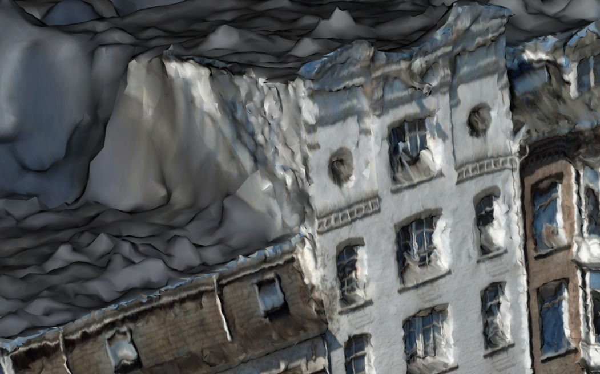
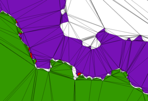
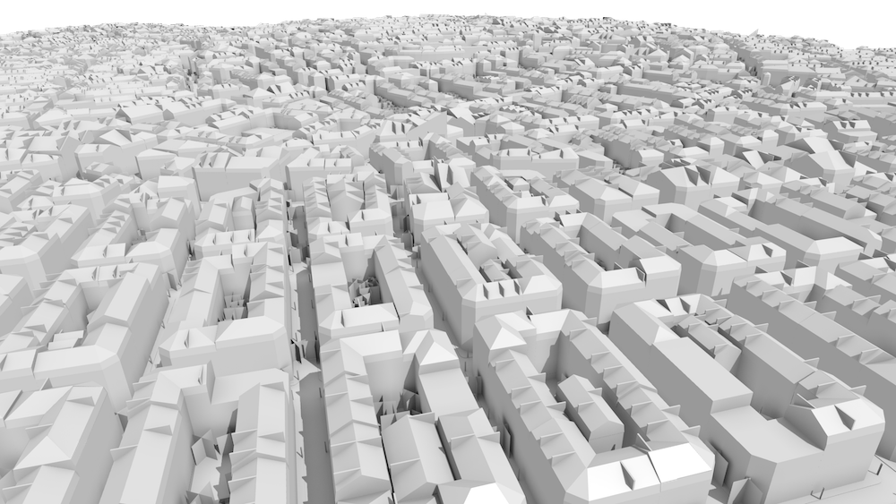
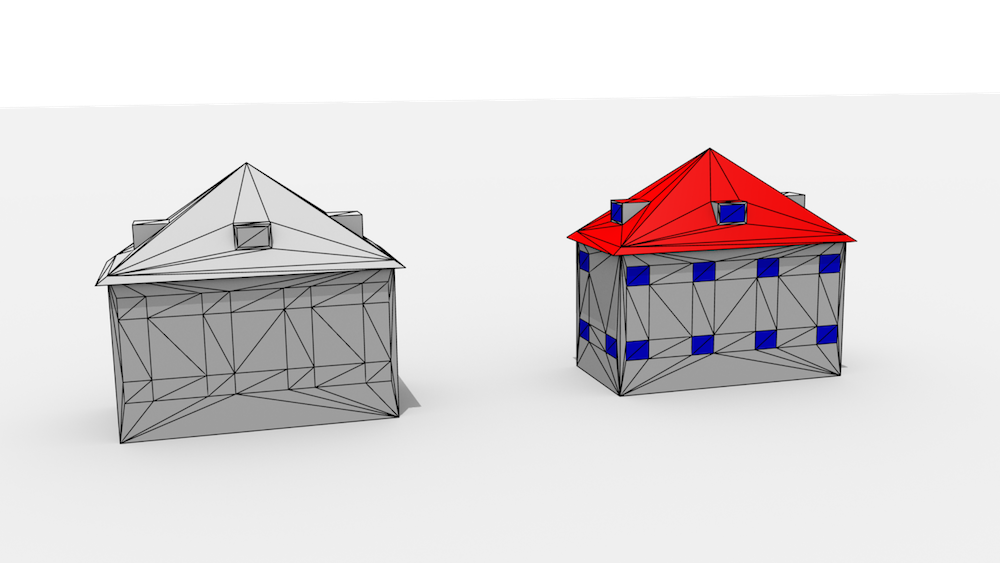

Potential MSc topics
- Smart weather data filtering using a 3D city model
- Extraction of 3D roof segments from aerial imagery
- “Straightening” and improvements of meshes of 3D city models obtained from image matching
- Generalisation of semantic 3D city models
- Edge-matching with a constrained triangulation
- Automatic thematic and semantic labelling of 3D city models
- Automatic construction of the 3D map of Amsterdam
- Semantic Feature Matching
- DTM Filtering for Photogrammetric DSM’s
- Estimating the cooling demand with 3D city models
- Automatic matching of 3D city models
- FaciliDat: 3D Indoor model and a database schema for facility management
- Flexible 3D Indoor model for navigation of different types of users
- 3D Indoor navigation: what kind of path?
- Indoor scanning for 3D modelling
- 3D reconstruction of rooms (floors, ceilings and walls) from point clouds
- 3D reconstruction of doors and windows from point clouds
- Colouring point clouds obtained from ZEB1
- Smart City
Smart weather data filtering using a 3D city model

Netatmo sells low-cost personal weather stations that anyone can buy, and so there are now close to 1000 stations in The Hague, Delft and the surrounding areas! By default, Netatmo owners share their data publicly, but like all crowdsourced datasets, it is all quite messy. The stations’ locations are only roughly known, some outdoor modules are in the sunlight (at certain times), have different exposure to the wind, etc.
The aim of the project is to improve the dataset by using the 3D model of The Hague to filter the data in a smart way. For instance, maybe we can find out if some of the stations are not located in the places where they say they are, or maybe some of the stations’ readings are reliable only during certain periods of the day due to the sunlight hitting them directly.
For this project, the student should be able to program well enough to read a CityGML model and to do analyses with geometric operations (such as casting shadows). C++ programming would be ideal but any other language should be good enough.
Contact: KeAr or Alexander Wandl
Extraction of 3D roof segments from aerial imagery

This project is done in cooperation with Readaar. Readaar already developed a method to efficiently determine 3D roof segments from LiDAR data. Their current method is extremely fast (less than 2 days to process the entire Netherlands on a normal workstation) and gives a coarse estimation (~1m planar accuracy) of all roof segments in the Netherlands. They want to upgrade their current method to combine LiDAR with aerial imagery to profit from the much higher resolution of imagery w.r.t. LiDAR. There are multiple ways to achieve this, which could be focused more on traditional point cloud processing methods or more on object detection/machine learning approaches. Both stereo imagery and LiDAR data are available for the entire Netherlands.
The student will be helped by a remote sensing specialist (ir. Sven Briels) and a machine learning expert (Jean-Michel Renders, PhD) from Readaar, and supervisors from TU Delft.
For this position we ask for programming skills, preferably in Matlab. The student will have to develop and test a large number of algorithms and approaches to get information from the raw data.
More information is found there.
Contact: Hugo Ledoux
“Straightening” and improvements of meshes of 3D city models obtained from image matching
3D - Amsterdam from CycloMedia on Vimeo.

The video above of a part of Amsterdam was created automatically by Cyclomedia from matching images taken from car driving around and of aerial photos. From far away, the model looks admittedly great, but if you zoom in it is very “noisy”, eg surfaces are not straight, and there are a lot of artefacts. Different methods have been tried (eg this one), and here the goal is to see how methods you learned in the 3D modelling course (eg RANSAC) can be used.
We have a large area of Amsterdam already (in COLLADA format: textured triangles), so the project can start right away!
Notice that it’s possible to do this project with a mix of software (FME, CloudCompare) and Python.
Contact: Hugo Ledoux and Abdoulaye Diakité
Generalisation of semantic 3D city models
Generalisation from a higher to a lower level of detail of a dataset is one of the key research topics in cartography (maps/scale) and computer graphics (3D models/simplification). In semantically enriched 3D city models, such as CityGML, the topic is not extensively researched because of some additional concepts, and due to differences such as selective generalisation (retaining the complexity of a part of a building such as the footprint while generalising only the roof). This research will investigate the generalisation of 3D city models, which will, beside the simplification of geometry, include generalisation of semantics and texture, and aggregation of city objects. Further, the student is expected to create a web interface which returns an generalised version of the uploaded CityGML dataset. The generalisation will be done according to the new paradigm of levels of detail developed in our group.
Contacts: Filip Biljecki and Hugo Ledoux
Edge-matching with a constrained triangulation

While the edge-matching problem is usually tackled by snapping geometries within a certain threshold, in our previous work we have shown that this solution is often not satisfactory and can be “dangerous”. We have developed a novel edge-matching algorithm for polygons where vertices are not moved, instead gaps and overlaps between polygons are corrected by using a constrained triangulation as a supporting structure and assigning values to triangles. The aim of this MSc project is to extend that work to polylines, ie how can polygons and lines be snapped together robustly by using a triangulation as a base structure. The project involves first a literature review of the specifications for the edge-matching of features across countries (INSPIRE document), a translation of these into specific rules in a triangulation and a prototype implementation. The existing prototype (called pprepair that needs to be extended has been developed in C++, thus the knowledge of C++ or a strong desire to learn is necessary.
Contact: Hugo Ledoux
Automatic thematic and semantic labelling of 3D city models

Many 3D city models are available as a soup of triangles, i.e. their geometry is not structured as in CityGML. This means that they do not contain semantics, i.e. the geometry of a building is not differentiated from a geometry of a road (above example), and the geometry within the same object (e.g. roof, windows and walls) have the same problem (see the image below, left with the desired result on the right). While such models may still be valuable in visualisation, their use for GIS purposes is hindered by the lack of semantics.

The goal of this thesis is to develop a reasoning system that would automatically infer the theme (semantics) of each geometric primitive, on two levels:
- City level (is it a tree, a building, or a road?)
- City object level (is the geometry a roof, a window, or a wall)?
The solution might involve pattern recognition techniques to aid the classification, hence it can be conducted in collaboration with the Pattern Recognition Laboratory at TU Delft.
Contact: Filip Biljecki, David Tax, and Hugo Ledoux
Automatic construction of the 3D map of Amsterdam
The aim is to develop a methodology to automatically construct the 3D map of (parts of) Amsterdam so that it can be used by architects and others to “discover” hidden parts of the city. The project would be in collaboration with people involved in the Hidden Amsterdam Festival and the AMS institute, and if successful would be used for the festival during the summer 2016.
Right now these 3D models are made manually, and the main objective of the project would be to investigate if these can be constructed automatically, and if yes with which datasets at what is the quality/accuracy of the 3D models? The exterior of the buildings could be reconstructed with already available datasets (AHN, BAG, BGT, etc.), but the interior is also of interest. Therefore, this topic is potentially suitable for 2-3 students working on different aspects.
Contact: Hugo Ledoux or Jantien Stoter or Sisi Zlatanova
Semantic Feature Matching

For large parts of the world, the available 3D geoinformation is limited, outdated or inaccurate. To cost-effectively obtain an up to date and high-resolution 3D (urban) environment model, automated 3D reconstruction techniques need to be applied on raw elevation and imagery sensor data, in order to find which features (vegetation, buildings, etc.) are present in the terrain and the representation of the relevant feature properties (tree species, roof type). Semantic model based feature matching is a reconstruction approach where a priori knowledge on the environment is used to represent and constrain a search space of possible feature models that can be found in the terrain.
The key in this research is to devise semantic model representations and search algorithms that explore the search space and find instances of the semantic feature model that best match the available sensor data. The project will focus on encoding and using object relations (e.g. between a building and adjacent street) in semantic feature models to improve the correctness of the matches. The project is carried out in co-operation with TNO in The Hague, where these techniques are applied in the field of gaming and simulation.
Contact: JS
DTM Filtering for Photogrammetric DSM’s

Although laser point clouds have become a common data resource for world modelling, photogrammetrically derived digital surface models are still widely used as the basis for a terrain modelling work flow. With current high resolution camera systems, highly detailed Digital Surface Models (DSM) can be obtained. Digital Terrain Model (DTM) filtering is used to remove features from the DSM and obtain a ground level elevation model. Although DTM filtering is a very basic step in terrain modelling, it is still a challenging task. One of the difficulties is the filtering of forested areas in hilly terrain, but also rough terrain is often not a trivial case.
This research will aim at finding improved filtering and interpolation techniques to resolve the difficulties in DTM filtering for photogrammetrically derived DSM’s. The project is carried out in co-operation with TNO in The Hague, where these techniques are applied in the field of gaming and simulation.
Contact: Jr
Estimating the cooling demand with 3D city models
This MSc thesis will be conducted in collaboration with the European Institute for Energy Research (EIFER).
It involves:
-
Developing a cooling energy model based on 3D city model: morphological analysis, urban typological and classification of 3D data, cooling energy needs calculation, etc.
-
Study the influence of urban morphology on cooling needs (e.g. through statistical regressions)
-
Implement this relation (e.g. equation between urban density and cooling needs) in a procedural tool.
For more information, please read here about a project that EIFER led with the LSE for studying the relation between urban morphology and cooling demand.
Contact: F Bi
Automatic matching of 3D city models
3D city models may be derived with different acquisition techniques from different producers in different levels of detail (LOD), resulting in multiple datasets of the same area. The aim of this research is to design and implement a method that finds corresponding features in two or more datasets. The benefits of this research are, for instance, linking objects for consistency (e.g. updating only one model and propagate the changes in the other models).
This topic is analogous with data matching in cartography.
Contact: FiBili
FaciliDat: 3D Indoor model and a database schema for facility management
Most building managers have little to no information about the indoor status of their buildings: the number of buildings, their structure, rooms, size of windows, doors, area of room floors, etc. Many maintenance daily and yearly tasks such as cleaning, renovation, painting, refurnishing, safety are performed in an ad-hoc manner, which cost extra effort and money. There is great interest in a 3D indoor model, which geometry, topology and semantic information will serve the tasks of the building managers.

Currently two international standards for 3D indoor modelling are available IFC and CityGML LOD4. Both standards have their advantages and disadvantages for such purposes. IFC has too many details and it is difficult to integrate with GIS. CityGML LOD4 is relatively simple, but hardly supported by major vendors. * First option: Is it possible to establish a 3D indoor model that can serve facility management purposes? This research will evaluate the suitability of the two standards (and available database implementations such as 3DCityDB) and propose a solution: extend/adapt one of them or design a new model combining best characteristics of the two. The proposed approach should be realised as a data model in DBMS and validated against a predefined set of user requirements. A simple web application allowing access and view to the database would be recommendable. (Required skills: UML, SQL, basic programming) * Second option: What kind of algorithms are needed to convert automatically IFC to CityGML LOD4 taking care of valid geometry and semantics. It is expected that recommendations for design of a building model will be derived, which will facilitate a fully automatic conversion. This might also result in more strict rules for representing indoor objects in CityGML. (Required skills: computational geometry, programming)
Contact: S Z (in cooperation with More )
Flexible 3D Indoor model for navigation of different types of users
Many indoor navigation apps are currently available but they are focussed on specific application (i.e. shopping, tourism) and have no flexibility. They cannot be adapted to the profile of the user or the task he/she is completing. They do not take into consideration temporal or permanent changes of the environment such as renovation, reorganisation of spaces or in case of emergency. User profiles and changed environment reflect the 3D Indoor model (geometry and network) that is used to compute the navigation paths.

This research will investigate what kind of 3D indoor model which can provide sufficient information to navigate different users through changing indoor environments. Are different LOD/layers needed? How to maintain connectivity of spaces? Can the network be derived on the fly or should be stored with the geometry model? Fundamental concepts of IndoorGML such as dual graph and Multi-Layered Space Model will be the starting point of the research. Generic user profiles and parameters reflecting changing indoor environmental need to be identified. A final app should demonstrate the flexibility of the model and the proposed strategy for path navigation (Required skills: UML, SQL, programming)
Contact: SZ (in cooperation with )
3D Indoor navigation: what kind of path?
Current navigation outdoor and indoor system are relatively simple and offer limited choices. Car navigation systems offer a choice between the shorter path or faster path, or avoiding tolls, highways. Indoor navigation apps can compute optimal path to visit a sequence of targets (e.g. in shopping). Various other options have been reported in the literature such as the least turn’s path, the most interesting paths, the least traversing path or the least obstruction path. Furthermore, the current navigation systems mostly consider that one person is navigated to one static target point. But are these options sufficient for indoor navigation? How the people want to move indoors? What kind of algorithms should be used, or developed. What kind of network is needed?


This research should investigate conditions for indoor navigation, corresponding algorithms and networks. Starting point of the research will be the taxonomy for navigation of emergency responders developed at the 3D geoinformation group. The research should identify, implement and validate new ways for indoor navigation (Required skills: graph theory, programming)
Contact: Sisi Zlatanova, Liu Liu
Indoor scanning for 3D modelling
3D indoor models are still very rare and difficult to obtain. 3D BIM models hardly contain recent modifications, 2D floor plans are not accurate and lack 3D. Range or optical images are some of the relatively easy and cheap way to collect 3D data to be provided for 3D modelling algorithms. There several interesting technologies currently at the market, which seem suited for indoor modelling, but they have never been thoroughly investigated and compared.


This research will concentrated on several technologies for collection point clouds ZEB1, Tango, terrestrial scanner, and optical video/images. A comparative study will be completed on the basis of a set of parameters, including time for collecting and processing data to a uniform point cloud. The 4 technologies will be tested on the same building under the same conditions. The most prominent technology should be identified for quick update of parts of 3D models. A test bed for testing and evaluation should be set up. (Required skills interest on scanning technology, processing of point clouds).
Contact: SZ
3D reconstruction of rooms (floors, ceilings and walls) from point clouds
3D reconstruction of indoor environments is complex task: rooms contain many objects in rooms or attached to walls and ceilings; many of the indoor spaces are half open and there are intermediate floors, balconies and strains. Manual reconstruction is tedious and time consuming; no automatic or semi-automatic approaches currently exist. This research will investigate and design/adapt approaches for identifying the walls, ceilings and floors belonging to an indoor space and construct solids (where possible). The research should also suggest a data structure for integrated management of vector geometry and corresponding point clouds. Several approaches can be addressed that can lead to different Master topics: shape grammar, voxels, segmentation/classification, etc. (Required skills: interest in processing point clouds, programming alternatively using existing software)
Contact: Sisi Zlatanova, Ben Gorte (related to M4C project SIMs3D)
3D reconstruction of doors and windows from point clouds
Doors and windows are of critical importance for indoor navigation and localisation, but very difficult to identify from point clouds: doors and windows can be closed or open during the scanning, windows can be covered with curtains or sun shutters. This research will concentrate investigated which outdoor approach could be appropriate for indoor environments. Recently completed research of Kau could be used as starting point. Different approaches can lead to different MSc topics: use of floor plans, semi-automatics, feature detection, etc. (Required skills: interest in processing point clouds, programming or alternatively using existing software)
Contact: Sva, Ben Gorte (related to M4C project SIMs3D)
Colouring point clouds obtained from ZEB1
Scanning indoor environments with ZEB1 is quick and accurate method for obtaining indoor point clouds. However, the point clouds don’t have colour. This research will investigate an approach for integrating images with the ZEB1 point clouds to obtain coloured points. The research will be in collaboration with CSIRO, GeoSlam and university of Picardie. (Required skills: interest in processing point clouds, programming)
Contact: Sva (in cooperation with LE)
Smart City
Connecting and visualizing real-time sensors with point cloud. Used for analysis of data and influencing the environment (smart city concept). Details to be provided later.
Contact: SiZl and Ester de Bruin (LE)